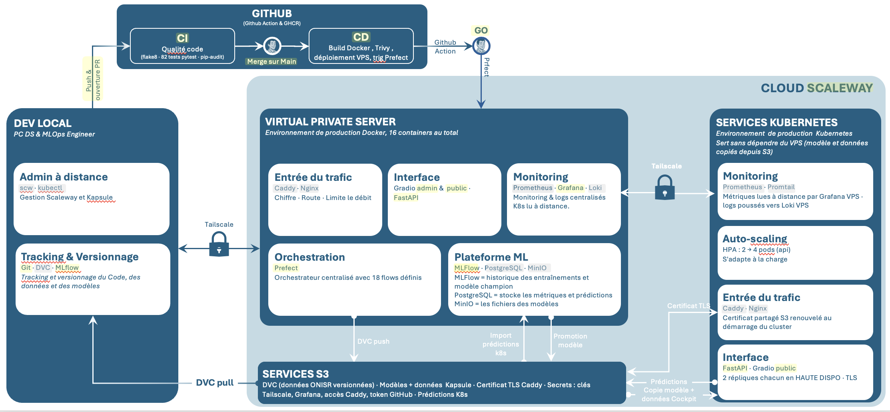

MLOps · Accidents routiers
VPS Scaleway DEV1-XL · Docker 17 services (16 permanents) · Prefect 18 deployments · 3 workflows GitHub Actions · Kapsule K8s (on-demand) · S3 Object Storage fr-par

Environnement développeur
| Outil | Rôle |
|---|---|
| git + DVC | Versioning code + données en remote sur S3 Scaleway |
| pytest + flake8 | Tests et lint locaux avant PR |
| scw CLI + kubectl | scw CLI — gestion des ressources cloud Scaleway (instances VPS, clusters K8s, kubeconfig Kapsule) · kubectl — gestion des workloads K8s (déploiements, rollouts, rollbacks Kapsule) |
| docker-compose | Stack locale complète (ports → 127.0.0.1) |
MLflow distant via Tailscale
MLFLOW_TRACKING_URI = http://100.117.99.62:5001 — les expériences DS sont loggées dans l'expérience accidents_severity_dev (MLflow DEV — séparée de accidents_severity_prod utilisée par le pipeline de prod).
Cycle quotidien DS
git pull && dvc pull # sync code + données depuis S3 → dev + expériences MLflow (accidents_severity_dev) → git push → PR vers main → CI → deploy automatique
| Conteneur | Port hôte | Accès | Rôle |
|---|---|---|---|
| api | 8080 / 8000 | Tailscale | FastAPI — prédiction + JWT + métriques |
| mlflow | 5001 | Tailscale | Tracking + Registry (image custom boto3/psycopg2) |
| gradio | 7860 | Tailscale | Cockpit Admin |
| gradio-public | 7862 (int.) | Caddy TLS → nginx | Cockpit public |
| Conteneur | Port hôte | Accès |
|---|---|---|
| postgresql | 5432 | interne Docker |
| minio | 9000 / 9001 | Tailscale |
| minio-init | — | EXIT après init (crée bucket) |
| nginx | 8090 | localhost (via Caddy) |
| prefect-server | 4200 | Tailscale |
| prefect-worker | — | process pool (image api + kubectl + scw) |
| node-exporter | 9100 | interne Docker |
| nginx-exporter | 9113 | interne Docker |
| blackbox-exporter | — | interne Docker — sonde HTTP bout-en-bout des accès publics (Caddy → nginx → api / gradio-public) |
| prometheus | 9090 | Tailscale |
| grafana | 3000 | Tailscale |
| loki | 3100 | Tailscale (réception des logs K8s via loki-forwarder) |
| promtail | — | interne Docker |
Tailscale → 100.117.99.62 · localhost → 127.0.0.1 (hôte VPS) · interne → réseau Docker · process pool → aucun port · EXIT → one-shot init
@Production) ; il range les fiches dans PostgreSQL et les fichiers dans MinIO. L'entraînement lui-même est lancé par Prefect.| Composant | Rôle | Contenu |
|---|---|---|
MLflow :5001 | Chef d'orchestre — enregistre chaque entraînement, versionne les modèles, porte l'alias @Production | Ne stocke rien lui-même : délègue à PostgreSQL et MinIO |
| PostgreSQL | Les fiches | Runs, paramètres, métriques, versions de modèles, alias @Production · table predictions : prédictions réelles du VPS et de K8s (colonne source), base du drift du trafic réel |
MinIO :9000 | Les fichiers — stockage compatible S3, local au VPS | Bucket mlflow : un dossier par version de modèle — model.pkl (le modèle), MLmodel (colonnes attendues), requirements.txt, exemple d'entrée |
Comment le modèle circule
Prefect entraîne 3 algorithmes ─► MLflow : fiche (PostgreSQL) + fichier model.pkl (MinIO) GO à la gate ─► alias @Production ─► l'API VPS charge models:/…@Production Promotion vers K8s ─► export trained_model.joblib + model_info.txt ─► S3 k8s-model/ ─► pods K8s Retour : API K8s ─► S3 k8s-predictions/pending/ ─► import avant chaque drift ─► PostgreSQL (source='k8s')
Les rapports de performance Evidently ne sont pas dans MLflow : ils sont écrits sur le disque du VPS (reports/drift/).
Point d'attention : PostgreSQL et MinIO ne sont pas sauvegardés automatiquement. Les données ONISR (DVC) et le modèle @Production ont une copie sur S3 ; l'historique MLflow (runs, versions précédentes) et la table predictions n'existent que sur le disque du VPS.
| Flow | Déclencheur | Rôle |
|---|---|---|
| etl | manuel / cron | download data.gouv.fr + validation schéma + preprocessing |
| train | manuel / post-etl | benchmark RF / XGBoost / LGBM → sélection champion (T1: tolérance régression ≤1 métrique vs @Prod · T3: +0.01 F1 vs @Prod) |
| full-retrain | manuel | tous les cycles depuis zéro — détecte automatiquement les années dispo (etl + train × N cycles + drift) |
| drift-check | manuel / fin de cycle T1 | drift de features (indépendant du modèle) → event=alert loggué → Loki → Grafana alerte email SMTP |
| prediction-drift-check | cron lundi 9h (Europe/Paris) + manuel | drift du trafic réel : prédictions récentes (table predictions, fenêtre 90 jours) vs référence d'entraînement — indépendant des cycles de retrain, ignoré sous 100 lignes réelles |
| reset | manuel | 7 options : predictions · drift · mlflow · postgres_full · minio · grafana · loki + full_reset (force toutes les options) |
| check-new-data | cron lundi 8h (Europe/Paris) | détecte nouvelles données ONISR → déclenche etl + train |
| update-model | trigger 3 CI/CD | train avec les hyperparamètres commités dans config/model_params.yml → si aucun champion : alerte DS + stop · si champion : gate manuelle → promote @Production + restart API (~30 s) → test-api → rollback alias MLflow @Production si KO → Kapsule |
| Flow | Déclencheur | Rôle |
|---|---|---|
| deploy-vps | flow parent (T1: check-new-data · T2: CD SSH · T3: update-model) | nœud commun T1, T2 & T3 — smoke test → gate manuelle (avant toute interruption VPS) → promote (T1/T3) + compose up (T2 uniquement) → test-api/test-gradio-public (interne puis externe) → Kapsule |
| deploy-kapsule | post deploy-vps | rolling update pods K8s (sans gate) → test-api/test-gradio-public (interne puis externe) → rollback vers le digest précis de l'image précédente si échec (pas rollout undo, insuffisant sur un tag flottant :latest) |
| kapsule-up | manuel | provision cluster Kapsule (root volume 50GB) + upload modèle S3 |
| kapsule-down | manuel | déprovision cluster Kapsule |
| test-api | CI/CD + manuel | 5 tests fonctionnels en CD (health · JWT · 401 · /predict · what-if) — interne (réseau Docker/ClusterIP) puis externe (domaine public) si l'interne passe · la 6ᵉ tâche (429) ne tourne qu'en lancement manuel depuis Prefect |
| test-rate-limit | manuel (Cockpit Orchestration) | protection anti-abus nginx sur /predict, 2 niveaux : par client (IP réelle, 20/min, rafale 10) et global (60/min, rafale 30) — clients simulés via X-Forwarded-For · jamais en CD |
| test-gradio-public | CI/CD + manuel | 3 tests via gradio_client sur le cockpit public, un par onglet (Predict · What-if giratoires · carte Points Noirs) — même logique interne/externe que test-api |
| diag | manuel | snapshot VPS : disk, docker ps, ports réseau |
| k8s-daemonset-health | manuel (Cockpit Healthcheck) | node-exporter/promtail/loki-forwarder/tailscale-subnet-router via kubectl — pas de Service stable ni HTTP pour ces 4 |
| disk-cleanup | cron 2h UTC | nettoyage images Docker + alerte si disk < 15% |
Prometheus VPS :9090 (Tailscale)
| Source | Métriques |
|---|---|
api:8000/metrics | requêtes, latence, prédictions (réel / test), modèle @Production, drift, qualité des données, métriques d'entraînement |
gradio:7860 · gradio-public:7862 | Cockpits admin et public : requêtes, latence, prédictions, erreurs fonctionnelles |
blackbox-exporter | sondes HTTPS toutes les 15 s : API et Cockpit public par l'adresse publique, Cockpit admin en interne |
node-exporter:9100 | CPU / RAM / disques du VPS |
nginx-exporter:9113 | connexions nginx actives |
Prometheus K8s — datasource Grafana directe (via Tailscale)
| Source | Métriques |
|---|---|
api:8000/metrics · gradio-public:7862 | requêtes, latence, prédictions, erreurs fonctionnelles |
kube-state-metrics | réplicas disponibles par Deployment |
blackbox-exporter | sondes HTTPS publiques (kapsule.jakat-inc.fr/health et /gradio-public-health) |
node-exporter ×2 | CPU / RAM / disk des nœuds K8s |
Grafana :3000 (Tailscale) — 7 dashboards, 12 règles d'alerte (email SMTP), seule instance du projet
Vue d'ensemble · 4 dashboards d'accès (API et Cockpit public × VPS et K8s : disponibilité, performance, usage, erreurs) · Flux MLOps (déploiements, ETL, modèle, drift) · Infrastructure. Le trafic de test est séparé du trafic réel (étiquette traffic, en-tête X-Synthetic).
Loki + Promtail — Promtail (VPS) collecte les logs de tous les conteneurs, dont les événements structurés (event=gate_open/gate_resolved/rollback/alert) ; Promtail (K8s, DaemonSet) fait de même pour les pods Kapsule, relayé par loki-forwarder via Tailscale (label cluster="kapsule").
Schéma de collecte, catalogue de chaque indicateur (ce qu'il mesure, comment, comment le lire) et détail des 12 alertes : doc Monitoring — source unique.
| Workflow | Déclencheur | Étapes |
|---|---|---|
| ci.yml | PR → main | Blueprint isolation check (bloque toute PR mélangeant config/model_params.yml avec du code source — forcer 2 PRs séparées) → flake8 → pip-audit → pytest → bloque PR si ✗ |
| deploy.yml | push → main | build images (si nécessaire) → Trivy CRITICAL → SSH VPS : git pull + pull images → déclenche Prefect |
| cleanup.yml | cron dimanche 3h UTC | nettoyage NVMe du VPS (docker prune, logs) via SSH |
4 images Docker buildées et publiées sur GHCR (scannées par Trivy)
ghcr.io/jakatt/cac-mlops-api:latest · cac-mlops-mlflow:latest · cac-mlops-gradio:latest · cac-mlops-caddy:latest (Caddy + plugin S3, Kapsule uniquement)
(gradio-public réutilise l'image gradio — commande différente au démarrage)
Rollback automatique : images taguées :sha-xxxxxxxx + :rollback avant chaque build. docker compose up et le smoke test s'exécutent dans le flow Prefect (deploy-vps-flow), après la gate manuelle.
Trigger 3 — Blueprint DS : le DS met à jour config/model_params.yml avec ses hyperparamètres gagnants et ouvre une PR dédiée (le CI guard bloque tout mélange code+blueprint dans la même PR). Après merge, update-model-flow s'entraîne directement sur ce fichier — config/model_params.yml commité est la seule source de vérité (aucune extraction MLflow).
Séquence T3 : Gate 1 CI (blueprint isolation check + lint/pytest) → Gate 2 KPI (train_flow : si aucun champion ou F1 < @Production + 0.01, stop + alerte — @Production inchangé ; pas de Trivy : aucune image reconstruite pour un blueprint pur) → smoke test pré-gate → Gate manuelle (métriques du nouveau blueprint + comparaison @Production vs candidat, rien appliqué en prod) → GO : promotion @Production + restart API (~30 s) → Gate 3 test-api ; si KO : rollback alias MLflow @Production + revert du blueprint sur main (idem si STOP à la gate). Aucun docker compose up — T3 est blueprint pur, le CI guard interdit tout mélange avec du code.
Sécurité : Trivy bloque si CVE CRITICAL · pip-audit dans CI · branch protection main (check CI test obligatoire, pas de review imposée — projet mono-développeur ; merge manuel uniquement).
maxUnavailable: 0). Pas de Cockpit admin sur K8s car dédié au seul chemin public HA (api/gradio-public/nginx/caddy). L'admin garde un seul Cockpit (VPS), dont le Healthcheck sonde aussi les services K8s via Tailscale.
| Deployment | Particularité |
|---|---|
| api | HPA CPU 70% uniquement → min 2 pods, max 4 · maxUnavailable: 0 — pas de replicas: en dur (conflit avec le HPA, cf. incident 2026-07-11). Métrique RAM retirée le 2026-07-24 : coût mémoire fixe (3 modèles ML chargés au démarrage, pas proportionnel au trafic) faisait rester le HPA pinné au max en permanence |
initContainer fetch-model : récupère trained_model.joblib depuis S3 au démarrage | |
| gradio-public | Cockpit public — ClusterIP, atteint uniquement via nginx→caddy |
| nginx | ClusterIP — rate-limiting + routing (/token 5r/min, /predict 20r/min) |
| caddy | Seul point d'entrée public — LoadBalancer, TLS Let's Encrypt auto (kapsule.jakat-inc.fr), 2 pods · sticky-sessions LB Scaleway (mode table) — nécessaire en plus du sessionAffinity K8s pour garder une session Gradio sur le même pod bout en bout (cf. Mécanismes de résilience) |
| prometheus | scrape api + gradio-public + kube-state-metrics + blackbox-exporter + node-exporter×2 — interrogé à distance par le Grafana du VPS |
| tailscale-subnet-router | pont vers le tailnet du VPS — advertise PodCIDR + ServiceCIDR |
| loki-forwarder | client Tailscale userspace dédié (SOCKS5, pas de route advertisée) — relaie les push Promtail vers le Loki du VPS |
| kube-state-metrics | RBAC scopé au namespace — réplicas disponibles par Deployment |
| blackbox-exporter | sonde HTTP continue sur l'URL publique (/health) |
| node-exporter (DaemonSet) | 1 pod/nœud, hostNetwork — CPU/RAM/disque des nœuds K8s |
| promtail (DaemonSet) | 1 pod/nœud — logs des pods K8s → Loki VPS via loki-forwarder |
Même principe que le VPS (Tailscale-only pour l'admin) — ni Prefect OSS ni demo.launch() n'ont d'authentification native, donc l'isolation réseau est la seule protection réelle.
| Composant | Exposition | Protection |
|---|---|---|
| caddy | Public (LoadBalancer) | TLS Let's Encrypt, /token rate-limité 5r/min |
| nginx, gradio-public | ClusterIP | Aucune IP publique propre — atteints par le public uniquement via caddy |
| prometheus, kube-state-metrics, blackbox-exporter | ClusterIP | Tailscale uniquement — jamais exposés au public, même indirectement |
| loki-forwarder | ClusterIP (SOCKS5 :1055) | Pas de route tailnet advertisée — sortant uniquement |
Domaine kapsule.jakat-inc.fr (TTL 300s) — l'IP de caddy change à chaque cycle kapsule-up/kapsule-down : write_kapsule_state met à jour le DNS automatiquement (scw dns record set).
Depuis le 2026-07-12, plus de Grafana ni de Loki propres à K8s — tout remonte dans les instances VPS, seul point de visualisation/alerte du projet.
prometheus-k8s, via Tailscale). Dashboard Kapsule K8s : replicas disponibles, sonde publique blackbox, scrape up{job="cac-mlops-api"}.loki-forwarder (label cluster="kapsule").kapsule-monitoring) — replicas api sous le minimum HPA, endpoint public down. execErrState: OK : Kapsule étant on-demand, le Prometheus K8s devient injoignable à chaque kapsule-down — état normal.| Secret | Variables |
|---|---|
s3-creds | AWS_ACCESS_KEY_ID · AWS_SECRET_ACCESS_KEY |
caddy-s3-creds | Clé IAM dédiée, restreinte au préfixe caddy-certs/ (blast radius limité) |
app-creds | JWT_SECRET_KEY · API_USERNAME · API_PASSWORD · POSTGRES_PASSWORD |
tailscale-auth | TS_AUTHKEY (clé reusable + ephemeral, taguée tag:k8s-cac-mlops) |
Cycle provision / déprovision
Cockpit → accordéon Orchestration → Démarrer le cluster K8s → kapsule-up-flow (provision + upload modèle S3 + DNS auto) → deploy-kapsule-flow rolling update pods → kapsule-down-flow déprovision (économie coût).
s3://cac-mlops-data · Scaleway Object Storage · région fr-par ·
Service managé Scaleway — distinct du VPS et du cluster K8s, accessible par les trois environnements
| Préfixe | Contenu | Écrit par | Lu par |
|---|---|---|---|
dvc/ |
Données ONISR versionnées — raw + preprocessé (fichiers .dvc commités, plus de tags data-v*) |
VPS — ETL flow (dvc push) |
DEV LOCAL (dvc pull) |
k8s-model/ |
trained_model.joblib + model_info.txt (ex. lgbm:v4) — copie du modèle @Production, exportée depuis MLflow (K8s n'a pas de MLflow) |
VPS — kapsule-up-flow (upload initial) · deploy_kapsule_flow (réexporte modèle + dataset à chaque deploy T1/T2/T3) |
Kapsule — initContainer fetch-model au démarrage pod |
k8s-gradio-data/ |
X_test.csv / y_test.csv — données des onglets What-if / Points Noirs du Gradio public K8s |
VPS — kapsule-up-flow · deploy_kapsule_flow |
Kapsule — initContainer de gradio-public |
k8s-predictions/ |
Prédictions réelles de l'API K8s, déposées par lots (pending/, puis processed/ une fois importées) |
Kapsule — API (toutes les 100 prédictions ou 5 min) | VPS — prediction-drift-check : import dans PostgreSQL avant chaque calcul de drift |
secrets/ |
Secrets rotables (jeton GitHub de l'ETL, clé Tailscale, identifiants Caddy S3, mot de passe Grafana) — lus au moment du besoin, jamais figés dans une image | Administrateur (rotation manuelle) | VPS (flows Prefect) · kapsule-up-flow |
caddy-certs/ |
Certificat TLS (Let's Encrypt ou ZeroSSL) — partagé entre déploiements Kapsule, renouvelé par kapsule-up à moins de 30 jours de l'expiration |
Kapsule (Caddy auto-write, clé IAM restreinte) | Kapsule (Caddy au restart — évite renouvellement inutile) |
Flux entre environnements
| Source | Destination | Ce qui transite |
|---|---|---|
| VPS | S3 | dvc push — données ONISR après ETL · deploy_kapsule_flow — réexporte modèle joblib + dataset à chaque deploy |
| S3 | DEV LOCAL | dvc pull — sync données versionnées pour expérimentation |
| S3 | Kapsule | initContainers : téléchargent trained_model.joblib et les données des Cockpits · Caddy : certificat TLS partagé entre cycles provision/déprovision |
| Kapsule | S3 | API K8s — prédictions réelles par lots (k8s-predictions/pending/) |
| S3 | VPS | Import des prédictions K8s dans PostgreSQL avant chaque calcul de drift |
| VPS | Kapsule | deploy_kapsule_flow → kubectl rollout restart (par l'API Kubernetes de Scaleway, accès récupéré avec scw) — redémarre les pods, qui rechargent le modèle depuis S3 · Tailscale : Grafana lit le Prometheus K8s, Promtail pousse les logs vers le Loki du VPS |
Pas d'artefacts MLflow sur S3 : les fichiers des modèles sont dans MinIO, sur le VPS (voir Plateforme ML). data/ n'est jamais commité dans git — seule la référence DVC (.dvc) l'est.